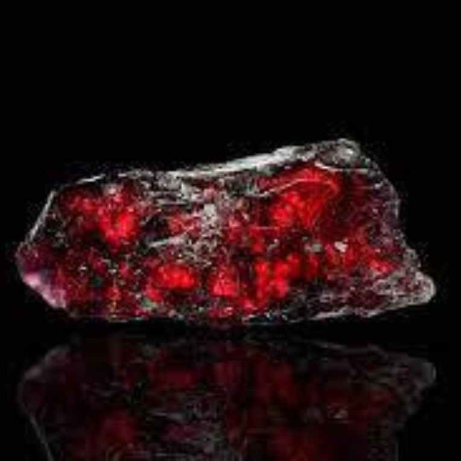
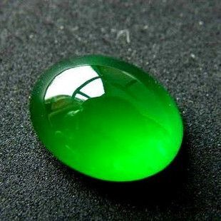
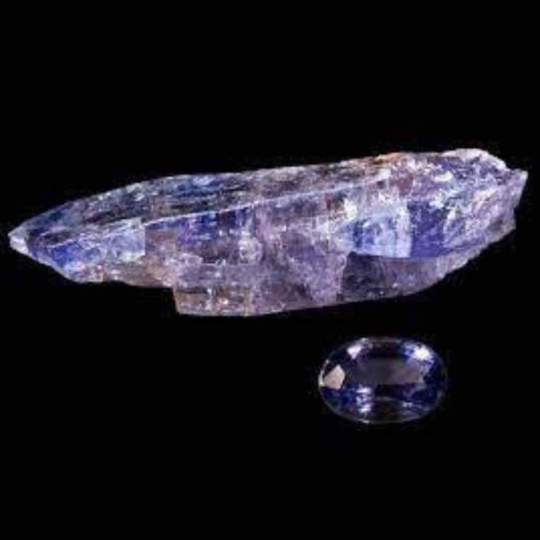
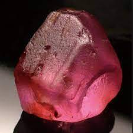
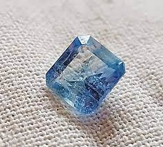

Beyond Diamonds: Unveiling the Rarest Gemstones on Earth

Have you ever wondered what are the rarest and most precious gemstones on Earth? You might think of diamonds, which are indeed very valuable and sought-after. But did you know that other gemstones are even rarer and more expensive than diamonds?
In this article, we will explore the fascinating world of gemstones by rarity, and learn about their origins, properties, and meanings. We will highlight four of the rarest gemstones on Earth: blue diamonds, red beryl, painite, and jadeite, and then discuss some other rare gemstones. These gemstones are not only stunning to look at but also have rich histories and symbolism behind them. Let’s dive into the realm of these rare and beautiful treasures.
The Rarest and Most Valuable Gemstones in the World
1. Blue diamonds

One of the rarest and most desirable gemstones on Earth is the blue diamond. Blue diamonds are diamonds that have a natural blue color, which can range from light to dark, and from pure to grayish. Blue diamonds are extremely rare because they require a very specific and unlikely set of conditions to form. They are made from primordial carbon, which is carbon that has been trapped in the Earth since its formation. This carbon is located in the lower mantle, deeper than most diamonds, and is exposed to high pressure and temperature. In addition, blue diamonds need the presence of boron, a trace element that gives them their blue hue. Boron is scarce in the lower mantle, and only a few regions have enough of it to produce blue diamonds.
Blue diamonds are not only rare but also very valuable. They have a high clarity, meaning they have few or no flaws or inclusions. They also have a large size, as they tend to grow bigger than other diamonds. The most expensive blue diamond ever sold was the Oppenheimer Blue, a 14.62-carat stone that fetched $57.5 million in 2016.
Blue diamonds also have a rich symbolism and history. They are often associated with royalty, nobility, and power, as they have been worn by kings, queens, and emperors throughout history. One of the most famous blue diamonds is the Hope Diamond, a 45.52-carat stone that is said to be cursed and bring misfortune to its owners. Another famous blue diamond is the Wittelsbach-Graff Diamond, a 31.06-carat stone that was once part of the crown jewels of Bavaria and Austria.
2. Red beryl

Another rare and precious gemstone is the red beryl, also known as bixbite or red emerald. Red beryl is a variety of beryl, the same mineral that forms emeralds, aquamarines, and morganites. However, red beryl is much rarer than its cousins, as it only occurs in a few locations in the world. The main source of red beryl is the Wah Wah Mountains in Utah, USA, where it was discovered in 1904. Other sources include the Thomas Range in Utah, the Black Range in New Mexico, and the Juab County in Utah.
Red beryl is rare because it requires a very rare combination of elements and environment to form. It is composed of beryllium, manganese, and chromium, which are scarce in the Earth’s crust. It also needs a volcanic setting, where hot gases and fluids interact with the host rocks. Red beryl crystals are usually very small, measuring less than a centimeter in length. They are also often fractured, included, or opaque, making them unsuitable for cutting and polishing. Therefore, only a few red beryl gems are available in the market, and they command very high prices. The most expensive red beryl ever sold was a 2.2-carat stone that fetched $10,000 per carat in 2006.
Red beryl is not only rare but also very beautiful. It has a vivid red color, which can vary from raspberry to crimson, and sometimes has a purple or orange tint. It has a high refractive index, reflecting light well and having good brilliance. It also has a high dispersion, meaning it splits light into its spectral colors and has a good fire. Red beryl also has a rich symbolism and history. It is often associated with passion, energy, and healing, as it is said to stimulate the heart chakra and enhance love, creativity, and vitality. It is also said to protect from negative energies, promote harmony, and increase self-confidence.
3. Painite
A third rare and valuable gemstone is the painite, which was once considered the rarest mineral on Earth. Painite is a borate mineral that was discovered in 1951 by Arthur C.D. Pain, a British gemologist and mineral collector. He found a few crystals of painite in a gem market in Myanmar (formerly Burma) and sent them to the British Museum for identification. It took several years for the mineral to be recognized and named after him.
Painite is rare because it has a very complex and unique chemical composition and crystal structure. It is composed of calcium, zirconium, boron, and aluminum, with traces of chromium, vanadium, and iron. It has a hexagonal crystal system but with unusual symmetry and dimensions. It also has a very high hardness, ranking 8.5 on the Mohs scale, making it harder than most gemstones.
Painite has a reddish-brown to orange color, which can change depending on the angle of light and the type of impurities. It has a high luster, meaning it has a shiny and smooth surface. It also has a high specific gravity, meaning it is very dense and heavy for its size. Painite also has a rich symbolism and history. It is often associated with spirituality, intuition, and creativity, as it is said to activate the third eye and crown chakras and enhance psychic abilities, insight, and imagination. It is also said to bring joy, happiness, and abundance, and to help overcome fear, anxiety, and stress.
4. Jadeite
A fourth rare and costly gemstone is the jadeite, one of the two types of jade, the other being nephrite. Jadeite is a pyroxene mineral that was first discovered in 1863 by Alexis Damour, a French mineralogist. He distinguished jadeite from nephrite by its higher hardness, density, and refractive index. He also named it after the Spanish word “jade”, which means “stone of the flank”, as it was used to cure kidney diseases.
Jadeite is rare because it is only found in a few places in the world, mainly in Myanmar, Guatemala, Japan, and Kazakhstan. It is also formed under very high pressure and temperature, in subduction zones where two tectonic plates collide and one slide under the other. Jadeite crystals are usually very small, measuring less than a millimeter in diameter. They are also often intergrown with other minerals, such as quartz, albite, and amphibole, making them difficult to separate and purify.
Jadeite has a wide range of colors, from white to black, and from green to purple, depending on the type and amount of impurities. It has a high luster, meaning it has a greasy and silky appearance. It also has a high toughness, meaning it is very resistant to breaking and chipping.
Jadeite also has a rich symbolism and history. It is especially important in Chinese culture, art, and philosophy, as it is considered the “stone of heaven” and the “imperial gem”. It is often associated with purity, wisdom, and harmony, as it is said to balance the yin and yang forces and promote peace, prosperity, and longevity. It is also used for carving, jewelry, and ritual objects, such as the bi disc and the cong tube.
Related Topic: Exploring the Diverse World of Crystal Purple Gemstones
Other Rare and Valuable Gemstones
5. Tanzanite
One of the rarest and most popular gemstones on Earth is the tanzanite, which is a variety of zoisite. Tanzanite was discovered in 1967 by Manuel de Souza, a Portuguese prospector, in the Merelani Hills of Tanzania. He named it after the country of its origin, and it was later marketed by Tiffany & Co. as a new and exotic gemstone.
Tanzanite is rare because it is only found in one place in the world, and its supply is limited and diminishing. It is formed by metamorphism, which is the alteration of rocks by heat and pressure, in the presence of vanadium, which gives it its blue-violet color. Tanzanite crystals are usually prismatic, meaning they have a rectangular or hexagonal shape, and can grow up to several centimeters in length.
Tanzanite has a unique trichroism, meaning it shows different colors depending on the angle of light and the direction of the crystal. It can display blue, violet, and red hues, which can change from deep to pale tones. It has a high luster, meaning it has a glassy and shiny appearance. It also has a high refractive index, meaning it reflects light well and has good brilliance. Tanzanite also has a rich symbolism and history. It is often associated with transformation, communication, and intuition, as it is said to activate the throat and third eye chakras and enhance self-expression, insight, and vision. It is also said to bring harmony, balance, and happiness, and to help overcome fear, stress, and grief.
6. Blue garnet

Another rare and stunning gemstone is the blue garnet, which is a variety of pyrope-spessartine. Blue garnet was discovered in the 1990s by a team of geologists in Bekily, Madagascar. It was later found in other locations, such as Turkey, Russia, and the United States, but in very small quantities.
Blue garnet is rare because it has a very unusual color change phenomenon, which is the ability to change color under different light sources. It is normally blue-green in daylight but turns purple-red in incandescent light. This is caused by the presence of manganese, which absorbs green and yellow light, and vanadium, which absorbs blue light. Blue garnet is also very hard, ranking 7.5 on the Mohs scale, making it durable and resistant to scratches and abrasions.
Blue garnet is very attractive with its high luster, meaning it has a vitreous and smooth appearance. It also has a high dispersion, meaning it splits light into its spectral colors and has a good fire. Blue garnet also has a rich symbolism and history. It is often associated with love, loyalty, and courage, as it is said to strengthen the heart chakra and enhance relationships, commitment, and bravery. It is also said to bring wisdom, creativity, and prosperity, and to help overcome obstacles, challenges, and conflicts.
7. Taafeite
A very rare and valuable gemstone is taafeite, which is a magnesium beryllium oxide mineral. Taafeite was discovered in 1945 by Richard Taaffe, an Irish gemologist and collector, who found a cut and polished stone in a jeweler’s shop in Dublin. He noticed that the stone had an unusual double refraction, which is the splitting of light into two rays when it passes through a crystal. He sent the stone to the British Museum for identification, and it was confirmed as a new mineral and named after him.
Taafeite is rare because it is very difficult to find and distinguish from other gemstones. It is often confused with spinel, which has a similar color, hardness, and crystal system. It is also often mixed with other minerals, such as quartz, corundum, and tourmaline, making it hard to separate and purify. Taafeite crystals are usually very small, measuring less than a millimeter in diameter. They are also very scarce, as only a few hundred specimens have been found in the world, mainly in Sri Lanka, Tanzania, China, and Myanmar.
Taafeite is very beautiful. It has a wide range of colors, from colorless to pink, purple, green, and brown, depending on the type and amount of impurities. It has a high luster, meaning it has a greasy and resinous appearance. It also has a high refractive index, meaning it reflects light well and has good brilliance. Taafeite also has a rich symbolism and history. It is often associated with spirituality, healing, and protection, as it is said to activate the crown chakra and enhance connection, awareness, and intuition. It is also said to bring harmony, balance, and peace, and to help overcome negativity, illness, and danger.
8. Royal demantoid

Another rare and exquisite gemstone is the royal demantoid, which is a variety of andradite. Royal demantoid was discovered in 1868 by Nils Gustaf Nordenskiöld, a Finnish mineralogist and explorer, in the Ural Mountains of Russia. He named it after the Danish word “demant”, which means “diamond-like”, because of its high dispersion and fire.
Royal demantoid is rare because it is only found in a few places in the world, mainly in Russia, Iran, Namibia, and Madagascar. It is also formed under very high pressure and temperature, in metamorphic rocks that are rich in iron and chromium. Royal demantoid crystals are usually very small, measuring less than a carat in weight. They are also often included with fibrous minerals, such as chrysotile and byssolite, which form a characteristic “horsetail” pattern inside the stone.
Royal demantoid is very stunning. It has a vivid green color, which can range from yellowish to bluish, and from light to dark, depending on the type and amount of impurities. It has a high luster, meaning it has an adamantine and metallic appearance. It also has a very high dispersion, meaning it splits light into its spectral colors and has a very good fire. Royal demantoid also has a rich symbolism and history. It is often associated with wealth, power, and prestige, as it was favored by the Russian aristocracy and nobility in the late 19th and early 20th centuries. It is also said to bring luck, success, and abundance, and to help overcome fear, anxiety, and stress.
9. Black Opal

The black opal is a rare and gorgeous gemstone which is a variety of opal. Black opal was discovered in the late 19th century by miners in Lightning Ridge, Australia. It was later recognized as a unique and valuable type of opal, and it became the official gemstone of New South Wales in 2008.
Black opal is rare because it is only found in one place in the world, and its formation is very complex and unpredictable. It is formed by the deposition of silica gel in the cracks and cavities of sedimentary rocks, such as sandstone and claystone. The silica gel then hardens and forms opal, which is composed of microscopic spheres of silica that diffract light and create a play of color. The color of the opal depends on the size, shape, and arrangement of the spheres, as well as the background color of the stone. Black opal has a dark body color, which can range from gray to black, and which contrasts with the bright and vivid colors of the opal.
Black opal has a high luster, meaning it has a waxy and smooth appearance. It also has a high play of color, meaning it shows a variety of colors, such as red, orange, yellow, green, blue, and purple, depending on the angle of light and the direction of the stone. Black opal also has a rich symbolism and history. It is often associated with mystery, magic, and creativity, as it is said to stimulate the imagination and enhance artistic expression. It is also said to bring protection, healing, and transformation, and to help overcome negativity, illness, and change.
10. Jeremejevite
Another very rare and splendid gemstone is the jeremejevite, which is a borate mineral. Jeremejevite was discovered in 1883 by Pavel Jeremejev, a Russian mineralogist and chemist, in the Adun-Chilon Mountains of Siberia. He named it after himself, and it was later confirmed as a new mineral by Gustav Tschermak, an Austrian mineralogist and petrologist.
Jeremejevite is rare because it is very scarce and difficult to find and identify. It is often confused with other gemstones, such as aquamarine, topaz, and quartz, which have a similar color, hardness, and crystal system. It is also often mixed with other minerals, such as tourmaline, fluorite, and calcite, making it hard to separate and purify. Jeremejevite crystals are usually very small, measuring less than a centimeter in length. They are also very rare, as only a few thousand specimens have been found in the world, mainly in Siberia, Namibia, Germany, and Myanmar.
Jeremejevite is very beautiful. It has a wide range of colors, from colorless to blue, yellow, green, and brown, depending on the type and amount of impurities. It has a high luster, meaning it has a vitreous and greasy appearance. It also has a high refractive index, meaning it reflects light well and has good brilliance. Jeremejevite also has a rich symbolism and history. It is often associated with wisdom, knowledge, and communication, as it is said to activate the throat and third eye chakras and enhance learning, understanding, and expression. It is also said to bring clarity, harmony, and peace, and to help overcome confusion, doubt, and conflict.
Conclusion
In this article, we have explored the fascinating world of gemstones by rarity and learned about their origins, properties, and meanings. We have focused on ten of the rarest gemstones on Earth: blue diamonds, red beryl, painite, jadeite, tanzanite, blue garnet, taafeite, royal demantoid, black opal, and jeremejevite. These gemstones are not only stunning to look at but also have rich histories and symbolism behind them. They are truly rare and beautiful treasures that deserve our admiration and appreciation. If you are interested in collecting or using these gemstones, you should be aware of their rarity and value, and make sure you buy them from reputable and ethical sources. You should also take good care of them, as they are delicate and precious. By doing so, you can enjoy the beauty and benefits of these gemstones for a long time.